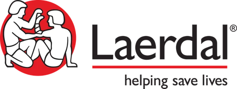
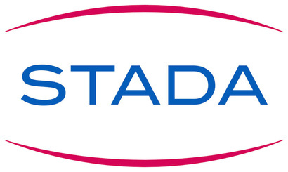
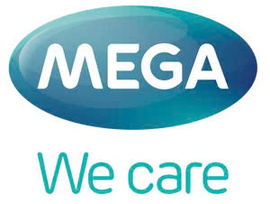
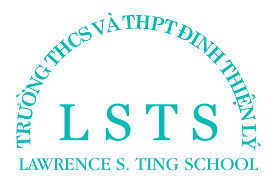
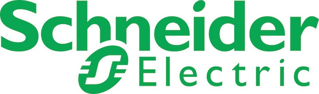
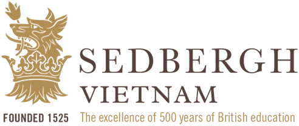

BPEC
Cấp cứu ngoại viện cơ bản
Trang bị kỹ năng hồi sinh tim phổi (CPR), sử dụng máy khử rung tim tự động (AED) và xử trí ban đầu các tình huống cấp cứu. Chương trình chú trọng thực hành và ứng dụng trong thực tế.
Tìm hiểu BPECVề GHME
GHME mang kiến thức sức khỏe và kỹ năng sơ cấp cứu đến gần hơn với cá nhân, gia đình và tổ chức. Chúng tôi đồng hành để mỗi người chủ động chăm sóc sức khỏe và tự tin hơn khi cần ứng phó với tình huống khẩn cấp.

Định hướng của GHME
Trong một tình huống khẩn cấp, sự chủ động bắt đầu từ việc biết phải làm gì. GHME tập trung vào đào tạo cấp cứu ngoại viện, giáo dục sức khỏe và các sản phẩm sơ cấp cứu để giúp cá nhân, gia đình và tổ chức sẵn sàng hơn.
Từ kỹ năng CPR và sử dụng AED đến chăm sóc sức khỏe thể chất, tinh thần và phòng ngừa bệnh tật, các giải pháp của GHME hướng đến môi trường sống, học tập và làm việc an toàn hơn.
Giải pháp từ GHME
Ba nhóm giải pháp bổ trợ nhau, gắn kiến thức và kỹ năng với nhu cầu thực tế của người học và tổ chức.
BPEC
Trang bị kỹ năng hồi sinh tim phổi (CPR), sử dụng máy khử rung tim tự động (AED) và xử trí ban đầu các tình huống cấp cứu. Chương trình chú trọng thực hành và ứng dụng trong thực tế.
Tìm hiểu BPECDoctor Talk
Các buổi đào tạo, hội thảo và chia sẻ cùng bác sĩ, chuyên gia về chăm sóc sức khỏe, phòng ngừa bệnh và an toàn cộng đồng; với nhiều chủ đề thiết thực cho nhân viên văn phòng và đội ngũ doanh nghiệp.
Khám phá Doctor TalkSản phẩm sơ cấp cứu
Máy AED Nihon Kohden cùng bộ sơ cấp cứu cá nhân, du lịch và văn phòng/gia đình giúp trang bị phương tiện hỗ trợ cần thiết cho các tình huống khẩn cấp.
Xem các sản phẩmĐiều tạo nên khác biệt
GHME kết hợp chuyên môn y khoa, chương trình phù hợp nhu cầu và phương pháp học có tính tương tác cao để đưa kiến thức đến gần với thực tế.

Đội ngũ y khoa giàu kinh nghiệm, được hỗ trợ bởi hội đồng chuyên môn.
Chương trình được điều chỉnh theo nhu cầu cụ thể của cá nhân và tổ chức, hướng đến tính phù hợp và hiệu quả.
Tăng tương tác và thực hành trực tiếp để người học có thể vận dụng kỹ năng trong các tình huống thực tế.
Sử dụng thiết bị hiện đại từ Laerdal, Nihon Kohden và các nhà cung cấp chuyên ngành.
Chương trình theo tiêu chuẩn quốc tế, hướng đến nâng cao năng lực và khả năng ứng dụng thực tế.
Con người GHME
Kết hợp kinh nghiệm quản trị trong ngành chăm sóc sức khỏe với chuyên môn y khoa, cấp cứu và hồi sức.

CSO · Đồng sáng lập
Có kinh nghiệm trong lĩnh vực dược phẩm và chăm sóc sức khỏe; từng đảm nhiệm các vai trò lãnh đạo tại DKSH, MSG Medical Group, Kim Dental, Phano Pharmacy và IQVIA.

CEO · Đồng sáng lập
Có kinh nghiệm quản trị vận hành và triển khai thương mại tại các tổ chức đa quốc gia; từng đảm nhiệm vai trò lãnh đạo tại DKSH Vietnam, Fulbright University Vietnam và Grundfos Vietnam.

CMO · Đồng sáng lập
Bác sĩ và doanh nhân trong lĩnh vực y tế, có nền tảng chuyên môn về cấp cứu và hồi sức; đồng sáng lập IVFMD Asia tại Singapore.

Cố vấn y khoa
Có kinh nghiệm chuyên sâu về hồi sức, cấp cứu và chống độc, cùng kinh nghiệm giảng dạy các chương trình BLS, ACLS và PALS.
GHME có đội ngũ giảng viên thuộc các lĩnh vực hồi sức, cấp cứu ngoại viện, nội khoa, dinh dưỡng, y học dự phòng, tâm lý, phục hồi chức năng và các chuyên ngành y khoa khác.
Đồng hành cùng GHME
GHME đồng hành cùng các đối tác thiết bị y tế, doanh nghiệp và trường học trong đào tạo và giáo dục sức khỏe.






Cùng xây dựng môi trường an toàn hơn
Trao đổi với GHME về chương trình đào tạo, chuyên đề sức khỏe hoặc giải pháp trang bị sơ cấp cứu phù hợp.
Gửi yêu cầu tư vấn68 Nguyễn Huệ, phường Sài Gòn,
TP. Hồ Chí Minh